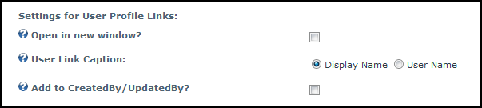

Settings for User Profile Links
How to configure the optional setting for user profile links in a list on the Form and List module.
- Select
 Form and List Configuration from the Form and List module actions menu - OR - Click the Form and List Configuration button.
Form and List Configuration from the Form and List module actions menu - OR - Click the Form and List Configuration button.
- Maximize
 the Schema Definition section.
the Schema Definition section.
- Maximize the More Column Settings section.
- At Settings for User Profile Links set the following options:
- At Open in New Window, to open the profile in a new Web browser window - OR - to open the profile in the same window.
- At User Link Caption select from the following options to set which name to display as the link to User Profile:
- At Add to CreatedBy/UpdatedBy?, to add a link to the user's profile on both the Created By and Updated By columns - OR - for no link.
- Click the Save Configuration and Return link.

Configuring User Profile Link Settings